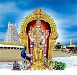

Murugan temple on the Bay of Bengal
TIRUCHENDUR MURUGAN TEMPLE
A sacred Arupadai Veedu shrine dedicated to Murugan, known for its seashore setting, Surasamharam festival, and Tamil temple architecture.
Explore

Murugan temple on the Bay of Bengal
A sacred Arupadai Veedu shrine dedicated to Murugan, known for its seashore setting, Surasamharam festival, and Tamil temple architecture.